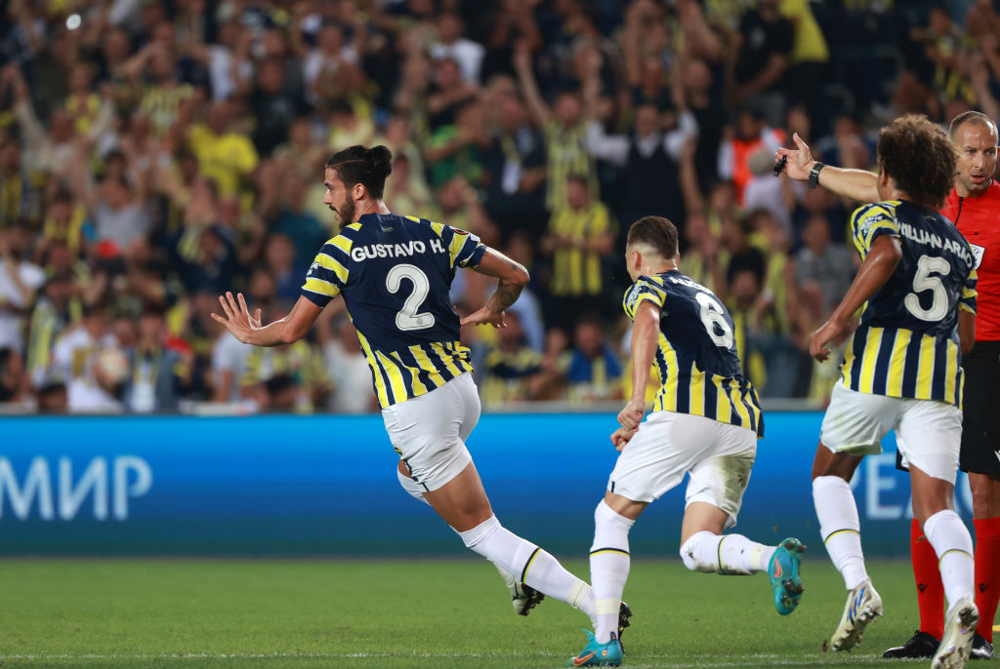

Динамо втратило очки в самому кінці матчу проти Фенербахче

Київське «Динамо» втретє за два місяці зустрілося в офіційному матчі з віце-чемпіоном Туреччини – стамбульським «Фенербахче». У другому кваліфікаційному раунді Ліги чемпіонів підопічні Мірчі Луческу насилу зуміли пройти турецьких «канарок», здобувши перемогу в поєдинку у відповідь лише в додатковий час.
Тоді стамбульські фани були настільки засмучені, що назло українській команді стали оспівувати ім'я російського диктатора владіміра путіна. УЄФА чомусь не став суворо карати «Фенербахче» за таку провину, а дарма! Цього вечора турецькі вболівальники знову відзначилися. Перед матчем у мережі з'явилися фото, на яких вони позували у масках «пині»...
Гравці «Фенербахче» хотіли взяти реванш і з перших хвилин зустрічі намагалися заволодіти ініціативою. Кияни також мали намір брати очки, тож на полі був жорсткий футбол. Угорський рефері Тамаш Богнар мав багато роботи з огляду на безліч порушень, що призводило до постійних зупинок гри.
У середині першого тайму «Фенербахче» створив моменти, які просто зобов'язані були призвести до голу, проте Георгій Бущан підстрахував партнерів по команді, які допустили бардак у штрафному майданчику. Воротар «біло-синіх» відбив два неприємні удари.
А на 35-й хвилині Бущан виявився безсилим: Дієго Россі з кутового навісив на голову Густаво Енріке, а той скористався безпорадністю своїх візаві на другому поверсі, відправивши м'яч у сітку. На перерву українська команда пішла, цілком заслужено поступаючись в один м'яч.

У роздягальні у Мірчі Луческу, напевно, була непроста розмова зі своїми підопічними, адже в першому таймі вони однозначно не виконали його настанови на гру. Але головне, що у другій 45-хвилинці кияни зрівняли рахунок: Віталій Буяльський з лівого флангу віддав передачу на Циганкова, і Віктор в один дотик точно пробив з лінії штрафного майданчика – воротар дотягнувся до м'яча, але відбити його не зміг.
Дуже неприємний епізод стався невдовзі після того, як рахунок став рівним. На 68 хвилині хвилини Микола Шапаренко отримав серйозне ушкодження і залишив поле на ношах. Тим часом Жорже Жезуш, який явно був незадоволений таким поворотом подій, провів потрійну заміну, сподіваючись, що його команді знову вдасться вийти вперед.
Матч добігав кінця і здавалося, що одне очко від «Динамо» вже нікуди не втече. Але на другій компенсованій хвилині «Фенербахче» все ж таки зміг вирвати перемогу завдяки вдало розіграному ауту. Міші Батшуаї, який проводив дебютний поєдинок за «канарок», опинився на дальній штанзі без опіки і замкнув скидання від Енріке, розстрілявши Бущана з воротарської зони.
1:2 – «Динамо» не набрало очок у стартовому поєдинку групового раунду Ліги Європи. Наступного тижня кияни проведуть номінально домашній матч проти кіпрського АЕКа з Ларнаки, який у паралельній зустрічі поступився французькому «Ренну» (1:2).
| # | Команда | P | W | D | L | Goals | PTS |
|---|---|---|---|---|---|---|---|
| 1 | Фенербахче | 1 | 1 | 0 | 0 | 2:1 | 3 |
| 2 | Ренн | 1 | 1 | 0 | 0 | 2:1 | 3 |
| 3 | АЕК Ларнакa | 1 | 0 | 0 | 1 | 1:2 | 0 |
| 3 | Динамо Київ | 1 | 0 | 0 | 1 | 1:2 | 0 |
Ліга Європи. Група В.
«Фенербахче» – «Динамо» – 2:1
 Густаво Енріке (35), Батшуаї (92) – Циганков (64)
Густаво Енріке (35), Батшуаї (92) – Циганков (64)
 Кінг (50), Россі (68), Аліоскі (82), Алтай Баяндир (96) – Гармаш (11), Сирота (78), Бущан (87)
Кінг (50), Россі (68), Аліоскі (82), Алтай Баяндир (96) – Гармаш (11), Сирота (78), Бущан (87)
«Фенербахче»: ГАлтай Баяндир, Кадіоглу, Густаво Енріке, Салай, Луан Перес, Россі (Кахведжи, 69), Вілліан Арао, Крешпу (Яндаш, 83), Аліоскі (Лінкольн, 83), Жоау Педро (Батшуаї, 69), Кінг (Валенсія, 69).
«Динамо»: Бущан, Дубінчак (Вівчаренко, 59), Сирота, Бурда, Кендзьора, Кабаєв, Шапаренко (Шепелєв, 68), Сидорчук, Циганков, Гармаш (Кравченко, 88), Буяльський.
Арбітр: Тамаш Богнар (Угорщина).
Стадіон: «Шюкрю Сараджоглу» (Стамбул, Туреччина)
Удари (у площину): 9 (6) – 5 (3)
Кутові: 8 – 2
Офсайди: 1 – 2.